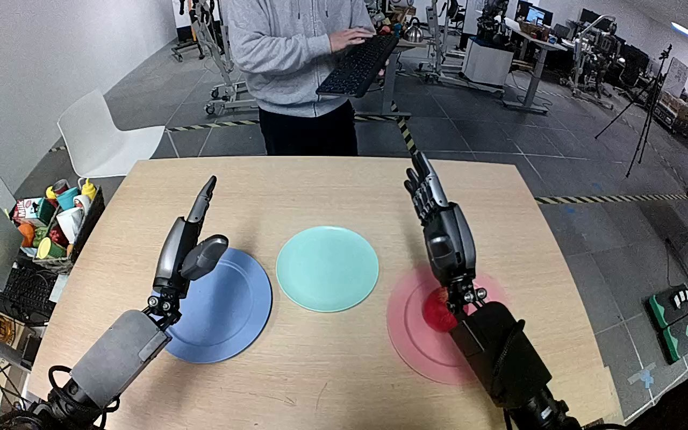

NVIDIA GR1 · 43
Video 43

Visual review action_review.json
{
"prompt_protocol": "humanoid_action_v1",
"prompt_provenance": "visually_authored_from_video_and_initial_frame",
"reviewed_contact_sheets": [
"sheet_001.jpg"
],
"inspected_frame_stride": 2,
"inspected_sampled_frame_count": 60,
"initial_scene": "Red apple rests on the pink plate in front of the right hand; an empty teal plate lies inward of it. Both forearms extend forward from the near side of the camera; the left hand is open above the blue plate.",
"observed_sequence": [
{
"start_frame": 0,
"end_frame": 35,
"action": "Right wrist reorients the open hand beside the apple on the pink plate; left hand stays raised and open.",
"confidence": "high"
},
{
"start_frame": 36,
"end_frame": 73,
"action": "Right hand positions thumb and fingers around opposite sides of the apple and gradually curls them closed while apple remains on pink plate.",
"confidence": "high"
},
{
"start_frame": 74,
"end_frame": 85,
"action": "Right hand secures the apple and begins lifting it clear of the pink plate.",
"confidence": "high"
},
{
"start_frame": 86,
"end_frame": 105,
"action": "Right hand carries the lifted apple inward and leftward toward the teal plate. Left hand does not assist.",
"confidence": "high"
},
{
"start_frame": 106,
"end_frame": 113,
"action": "Right hand lowers apple into the teal plate area while maintaining its grasp.",
"confidence": "high"
},
{
"start_frame": 114,
"end_frame": 119,
"action": "Right fingers extend open as apple settles on teal plate. Hand remains beside and partly over apple; no full withdrawal is shown.",
"confidence": "high"
}
],
"arm_hand_roles": {
"right": "Sole manipulating hand: grasps, lifts, transports and sets down apple, then opens fingers.",
"left": "Open and largely stationary over blue plate; no object contact or assisting role.",
"coordination": "Single-hand task; no transfer or two-hand support. Background person does not interact with manipulated object."
},
"anatomical_side_evidence": "Both arms extend forward from the lower near edge toward table, with backs of hands facing the camera and inward-facing thumbs. This camera is looking along the arms toward the workspace rather than facing the robot. The active hand on image right has the corresponding right-hand thumb orientation, and its forearm extends from the right near side; the opposite hand and forearm mirror this on the left. Shoulder/torso attachment is outside the frame. Anatomical right assignment is supported by visible hand chirality and forward arm configuration, not image side alone.",
"terminal_state": "Apple rests on teal plate. Right hand has opened its fingers and remains immediately beside/partly over the apple; left hand remains open above blue plate. Pink plate is empty.",
"uncertainties": [
"Right hand does not fully withdraw before the final frame; exact residual fingertip contact with apple is partly occluded. Full shoulder and torso attachments are outside camera view, although hand chirality and forward arm orientation support anatomical sides."
],
"annotation_discrepancies": [],
"evidence_frame_indices": [
0,
36,
74,
86,
106,
112,
116,
119
],
"selected_execution_status": "success",
"inspection_coverage": "Viewed sheet_001.jpg covering all 60 even source frames 0–118 across complete 120-frame video; inspected seven native detail frames and native source first-frame PNG. Grasp, lift, transport, set-down and finger-opening ending inspected.",
"video_id": "43",
"dataset": "NVIDIA_GR1_100",
"dedicated_review_agent": "review_gr1_43",
"review_source_video": "NVIDIA_GR1_100/43/original/original.mp4",
"source_frame_count": 120,
"source_fps": 20.0,
"native_detail_frames": [
36,
74,
86,
106,
112,
116,
119
],
"world_model_prompt": "The robot closes its right hand around the red apple on the pink plate, lifts it clear, and carries it over to the teal plate. It lowers the apple onto the teal plate and opens its fingers, leaving the apple on the plate with the hand still nearby. Keep the camera fixed; preserve robot geometry, physically valid joint motion, and normal gripper opening and closing.",
"original_task_instruction": "Use the right hand to pick up red apple from pink plate to teal plate.",
"selected_segment": {
"start_frame": 0,
"end_frame_exclusive": 120,
"reason": "Complete original single-task reference; no cropping or trimming requested."
},
"source_video_sha256": "94880e404ec9554b853c7bc21ba83f3e511563f6831a644ede8beb8caf75626a",
"review_completed_at": "2026-10-13T18:06:22.056250+00:00"
}